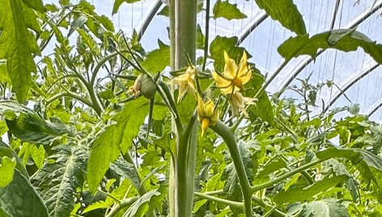
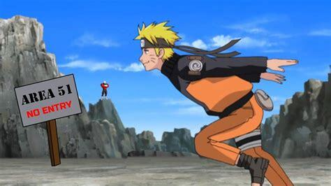

Episode 2 of 15 · May 8, 2025
Crop uniformity
Here’s what happened in the previous week: 3 new leaves & one new cluster = excellent growth!
Over the last week, Allison & Drew got 3 new leaves and 1 new cluster. The big guys grow at that pace. Great recovery from the wilting issues !
Let’s dive deeper in what you shared :
- The stem has gotten bigger than a AA battery
- Some plants have 9 fruits while some don’t have any
This week, we'll focus on the last one. Plant uniformity is a sign that you are in control... It also helps to stay in control. Let's look into it !

Variation in plant fruit load
Having some plants with 9 fruits while others have zero is concerning. Plants should be uniform. That means the same fruit load, more or less 2 fruits.
The lower fruit load probably also explains the stem getting bigger. Not enough fruits to consume the energy.
Before increasing the temperature to turn the extra energy into faster growth though, we’ll address the uniformity issue. This should fix the stem size. Our energy balance indicator.
In this case, pollination is probably what's causing the fruit load variation. How do I know that ?
The Naruto flowers
A very scientific word to illustrate a flower that is not pollinated for too long.
Here’s a close-up of the plant above.

Do you see the two flowers that are so open that they're stretching backwards?
It makes me think of Naruto while he is running.

When flowers turn into Narutos, they are late.
For heirlooms/slicers, having two or more Naruto flowers in a cluster is a sign of poor pollination.
A good pollination protocol
We don’t know yet what pollination protocol they use at Ghost House Farm.
Here’s what’s been working for us at the farm:
- Set an alarm every day 5 min before lunchtime (the driest time of the day, so the pollen doesn’t stick)
- Swing a stick at the wires tomatoes hang from
- Since it is a very simple task to delegate, and farm owners have a lot on their plates, this responsibility goes to a full-time worker.
Let’s see what does that uniformity and if it fixes the stem size !
Keep up the good work, Allison and Drew!